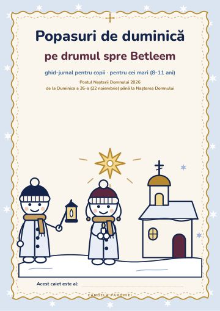

Popasuri de duminicăpe drumul spre Betleem
Ghid-jurnal pentru copii · două caiete: pentru cei mici (4-7 ani) și pentru cei mari (8-11 ani)A guide and journal for children · two books: for little ones (ages 4-7) and for older children (ages 8-11)Guía y diario para niños · dos cuadernos: para los pequeños (4-7 años) y para los mayores (8-11 años)
De la Duminica a 26-a după Rusalii (22 noiembrie) până la Nașterea Domnului, copilul se oprește în fiecare duminică din drumul spre Betleem: ascultă Evanghelia la Sfânta Liturghie, o recunoaște, scrie sau desenează ce a auzit și alege fapta bună a săptămânii.
From the 26th Sunday after Pentecost (22 November) to the Nativity of the Lord, the child stops every Sunday on the road to Bethlehem: they hear the Gospel at the Divine Liturgy, recognise it, write or draw what they heard and choose the good deed of the week.
Desde el domingo 26 después de Pentecostés (22 de noviembre) hasta la Natividad del Señor, el niño se detiene cada domingo en el camino a Belén: escucha el Evangelio en la Divina Liturgia, lo reconoce, escribe o dibuja lo que ha oído y elige la buena obra de la semana.
Please note: both books are in Romanian.
Atención: los dos cuadernos están en rumano.
Plata și descărcarea se fac prin Gumroad.Payment and download through Gumroad.El pago y la descarga se hacen a través de Gumroad.
Ce găsește copilul în fiecare duminicăWhat the child finds each SundayLo que el niño encuentra cada domingo
Evanghelia și un versetThe Gospel and a verseEl Evangelio y un versículo
Trimiterea exactă la Evanghelia care se citește în biserică în duminica aceea și versetul-cheie, după Biblia Sinodală.
The exact reference to the Gospel read in church that Sunday and the key verse, from the Romanian Synodal Bible.
La referencia exacta al Evangelio que se lee en la iglesia ese domingo y el versículo clave, según la Biblia Sinodal rumana.
Povestea pe scurtThe story in briefLa historia en breve
Evanghelia zilei repovestită pe înțelesul copiilor, de citit împreună sâmbătă seara, ca duminică s-o recunoască la slujbă.
The day's Gospel retold for children, to read together on Saturday evening so that they recognise it at church on Sunday.
El Evangelio del día contado para niños, para leerlo juntos el sábado por la noche y reconocerlo el domingo en la iglesia.
GhicitoareaThe riddleLa adivinanza
Cei mici au o ghicitoare în versuri și un cuvânt bun de încercuit; cei mari, o ghicitoare din text și o întrebare de gândit. Răspunsul e tipărit cu capul în jos.
Little ones get a rhyming riddle and a good word to circle; older children, a riddle from the text and a question to think about. The answer is printed upside down.
Los pequeños tienen una adivinanza en verso y una palabra buena para rodear; los mayores, una adivinanza sobre el texto y una pregunta para pensar. La respuesta está impresa al revés.
Pagina de coloratThe colouring pageLa página para colorear
Un desen mare, cu contur gros, cu lucrurile din poveste: hambarul, cămila și urechea acului, masa cea mare, copacul neamului. La Samarinean și la Crăciun, o icoană veche de privit.
A large drawing with thick lines showing things from the story: the barn, the camel and the eye of the needle, the great supper table, the family tree. For the Samaritan and for Christmas, an old icon to look at.
Un dibujo grande, de trazo grueso, con las cosas de la historia: el granero, el camello y el ojo de la aguja, la gran cena, el árbol de la familia. Para el samaritano y la Navidad, un icono antiguo para contemplar.
Jurnalul copiluluiThe child's journalEl diario del niño
Ce am auzit azi la biserică, ce am făcut bine săptămâna aceasta și fapta bună a săptămânii. Cei mici desenează și bifează; cei mari scriu.
What I heard at church today, what I did well this week and the good deed of the week. Little ones draw and tick; older children write.
Lo que oí hoy en la iglesia, lo que hice bien esta semana y la buena obra de la semana. Los pequeños dibujan y marcan; los mayores escriben.
Sfaturi pentru părințiTips for parentsConsejos para los padres
La fiecare popas, o casetă cu un sfat din Sfântul Ioan Gură de Aur sau din Sfântul Cuvios Paisie Aghioritul, pentru rugăciunea de acasă și drumul la biserică.
At every stop, a box with advice from Saint John Chrysostom or Saint Paisios the Athonite, for prayer at home and the way to church.
En cada parada, un recuadro con un consejo de San Juan Crisóstomo o de San Paisio Aghiorita, para la oración en casa y el camino a la iglesia.
Popasurile, duminică de duminicăThe stops, Sunday by SundayLas paradas, domingo a domingo
- bonusPagină bonus · 15 noiembrieBonus page · 15 NovemberPágina extra · 15 de noviembre
Duminica Samarineanului milostivThe Sunday of the Good SamaritanDomingo del buen samaritano
Luca 10, 25-37 - 2Duminică, 22 noiembrieSunday, 22 NovemberDomingo, 22 de noviembre
Duminica bogatului cu hambarele plineThe rich man with the full barnsEl rico de los graneros llenos
Luca 12, 16-21 - 3Duminică, 29 noiembrieSunday, 29 NovemberDomingo, 29 de noviembre
Duminica tânărului (dregătorului) bogatThe rich young rulerEl joven rico
Luca 18, 18-27 - 4Duminică, 6 decembrieSunday, 6 DecemberDomingo, 6 de diciembre
Duminica femeii gârbove și Sfântul Ierarh NicolaeThe bent woman, and Saint NicholasLa mujer encorvada, y San Nicolás
Luca 13, 10-17 - 5Duminică, 13 decembrieSunday, 13 DecemberDomingo, 13 de diciembre
Duminica Sfinților Strămoși: Pilda cinei celei mariThe Holy Forefathers: the parable of the great supperLos Santos Antepasados: la parábola de la gran cena
Luca 14, 16-24 - 6Duminică, 20 decembrieSunday, 20 DecemberDomingo, 20 de diciembre
Duminica dinaintea Nașterii DomnuluiThe Sunday before the NativityEl domingo antes de la Natividad
Matei 1, 1-25  Vineri, 25 decembrieFriday, 25 DecemberViernes, 25 de diciembre
Vineri, 25 decembrieFriday, 25 DecemberViernes, 25 de diciembrePopasul de Crăciun: Nașterea DomnuluiThe Christmas stop: the Nativity of the LordLa parada de Navidad: la Natividad del Señor
Matei 2, 1-12 · apoi pagina «Am ajuns la Betleem!», cu steaua de coloratMatthew 2:1-12 · then the page «We have reached Bethlehem!», with a star to colourMateo 2, 1-12 · luego la página «¡Hemos llegado a Belén!», con una estrella para colorear
Pericopele urmează calendarul Bisericii Ortodoxe Române pe 2026. Dacă în parohia dumneavoastră se rânduiește altfel într-o duminică, urmați rânduiala parohiei.The readings follow the 2026 calendar of the Romanian Orthodox Church. If your parish reads differently on a given Sunday, follow your parish.Las lecturas siguen el calendario 2026 de la Iglesia Ortodoxa Rumana. Si en su parroquia se lee otra cosa algún domingo, siga a su parroquia.
Două caiete, doi copii, același drumTwo books, two children, one roadDos cuadernos, dos niños, un mismo camino
Frații merg pe același drum, fiecare cu caietul lui, și își pot povesti unul altuia ce au aflat.Siblings walk the same road, each with their own book, and can tell each other what they have learned.Los hermanos recorren el mismo camino, cada uno con su cuaderno, y pueden contarse lo que han aprendido.
Pentru cei mici (4-7 ani)For little ones (ages 4-7)Para los pequeños (4-7 años)
- litere mari și desen mare, cu contur gros;
- ghicitori ușoare în versuri și cuvinte bune de încercuit;
- jurnal în care părintele scrie, iar copilul desenează și bifează;
- pagina «Pornim la drum!», unde copilul se desenează gata de drum.
- large print and big drawings with thick lines;
- easy rhyming riddles and good words to circle;
- a journal where the parent writes and the child draws and ticks;
- a «Let's set off!» page where the child draws themselves ready for the road.
- letra grande y dibujos grandes de trazo grueso;
- adivinanzas fáciles en verso y palabras buenas para rodear;
- un diario en el que el padre escribe y el niño dibuja y marca;
- la página «¡En marcha!», donde el niño se dibuja listo para el camino.

Pentru cei mari (8-11 ani)For older children (ages 8-11)Para los mayores (8-11 años)
- povestea Evangheliei spusă mai pe larg;
- ghicitori care trimit înapoi la text, cu versetul la răspuns;
- o întrebare de gândit și rânduri de scris la fiecare popas;
- jurnal scris de copil: «Nu există răspunsuri greșite în jurnal».
- the Gospel story told in more detail;
- riddles that send the child back to the text, with the verse in the answer;
- a question to think about and lines to write at every stop;
- a journal written by the child: «There are no wrong answers in the journal».
- la historia del Evangelio contada con más detalle;
- adivinanzas que remiten al texto, con el versículo en la respuesta;
- una pregunta para pensar y líneas para escribir en cada parada;
- un diario escrito por el niño: «En el diario no hay respuestas equivocadas».
Câteva pagini din caieteA few pages from the booksAlgunas páginas de los cuadernos
Apăsați pe o pagină ca s-o vedeți mare.Tap a page to see it larger (Romanian edition).Pulse una página para verla en grande (edición en rumano).
Cum folosim caietulHow to use the bookCómo usar el cuaderno
Pentru fiecare duminică dăm trimiterea exactă la Evanghelie și un singur verset scurt, după Biblia Sinodală; restul este repovestire scrisă de noi, pe înțelesul copiilor. Vă îndemnăm să citiți Evanghelia întreagă din Biblia de acasă. Icoanele de model sunt vechi și în domeniul public: Evangheliarul de la Rossano (sec. VI) și icoana Nașterii Domnului din Catedrala Bunei Vestiri din Kremlin (sec. XV). Desenele de colorat nu redau chipuri de sfinți.
Caietele nu repetă caietul gratuit «Drumul meu spre Betleem»: acolo sunt serile de acasă, aici sunt duminicile și Evanghelia auzită la Sfânta Liturghie. Le puteți folosi pe amândouă: seara pe cel gratuit, duminica pe acesta. Caietele sunt pentru folosire în familie și în parohie.
For each Sunday we give the exact Gospel reference and a single short verse from the Romanian Synodal Bible; the rest is our own retelling for children. We encourage you to read the whole Gospel from your Bible at home. The model icons are historic and in the public domain: the Rossano Gospels (6th century) and the Nativity icon of the Annunciation Cathedral in the Moscow Kremlin (15th century). The colouring drawings show no faces of saints.
These books do not repeat the free book «Drumul meu spre Betleem»: that one is for the evenings at home, this one for the Sundays and the Gospel heard at the Divine Liturgy. You can use both. The books are for use in the family and in the parish.
Para cada domingo damos la referencia exacta del Evangelio y un solo versículo breve de la Biblia Sinodal rumana; el resto es un relato nuestro, al alcance de los niños. Les animamos a leer el Evangelio completo en la Biblia de casa. Los iconos de modelo son antiguos y de dominio público: el Evangeliario de Rossano (siglo VI) y el icono de la Natividad de la catedral de la Anunciación del Kremlin (siglo XV). Los dibujos para colorear no representan rostros de santos.
Estos cuadernos no repiten el cuaderno gratuito «Drumul meu spre Betleem»: aquel es para las noches en casa, este para los domingos y el Evangelio escuchado en la Divina Liturgia. Pueden usar los dos. Los cuadernos son para uso en la familia y en la parroquia.
În alte limbi, pentru copiii care cresc în diasporaIn other languages, for children growing up abroadEn otros idiomas, para los niños que crecen fuera de Rumanía
Aceleași două caiete, cu textul în limba țării în care cresc copiii (5 €).The same two books, with the text in the language of the country where your children are growing up (€5).Los mismos dos cuadernos, con el texto en el idioma del país donde crecen los niños (5 €).
Drum bun spre Betleem!Safe journey to Bethlehem!¡Buen camino hacia Belén!
Ați găsit o greșeală sau aveți o propunere? Spuneți-ne părerea.Found a mistake or have a suggestion? Tell us what you think.¿Ha encontrado un error o tiene una propuesta? Díganos su opinión.